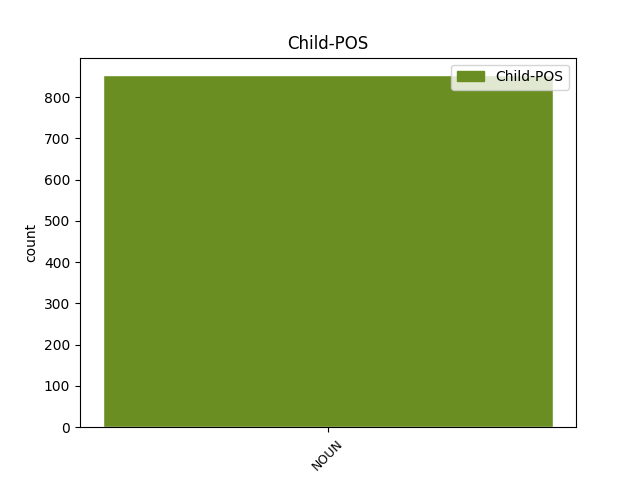

Distribution of features within this leaf

Agreement Rules sorted by frequency.
- When the dependent token is the subject(subj) of the head token, and the dependent token is NOUN.
1 и _ _ _ _ 0 _ _ _
2 ини _ _ _ _ 0 _ _ _
3 придѫ _ _ _ _ 0 _ _ _
4 корабли _ _ _ _ 0 _ _ _
5 отъ _ _ _ _ 0 _ _ _
6 тивериѣдꙑ _ _ _ _ 0 _ _ _
7 близъ _ _ _ _ 0 _ _ _
8 мѣста _ _ _ _ 0 _ _ _
9 идеже _ _ _ _ 0 _ _ _
10 ѣсѧ _ _ _ _ 0 _ _ _
11 хлѣбꙑ _ _ _ _ 0 _ _ _
12 хвалѫ _ _ _ _ 0 _ _ _
13 въздавъшю въздати VERB V- Case=Dat|Gender=Masc|Number=Sing|Strength=Strong|Tense=Past|VerbForm=Part|Voice=Act 0 _ _ _
14 г҃ю господь NOUN Nb Case=Dat|Gender=Masc|Number=Sing 13 subj _ ref=JOHN_6.23
1 пѧти _ _ _ _ 0 _ _ _
2 десѧтъ десѧть NUM Ma Case=Gen|Gender=Fem,Masc|Number=Plur 0 _ _ _
3 лѣтъ лѣто NOUN Nb Case=Gen|Gender=Neut|Number=Plur 2 mod _ ref=JOHN_8.57
4 не _ _ _ _ 0 _ _ _
5 оу _ _ _ _ 0 _ _ _
6 имаши _ _ _ _ 0 _ _ _
7 ꙇ _ _ _ _ 0 _ _ _
8 аврама _ _ _ _ 0 _ _ _
9 ли _ _ _ _ 0 _ _ _
10 еси _ _ _ _ 0 _ _ _
11 видѣлъ _ _ _ _ 0 _ _ _
1 вьсѣкѫ _ _ _ _ 0 _ _ _
2 разгѫ _ _ _ _ 0 _ _ _
3 не _ _ _ _ 0 _ _ _
4 творѧштѫѭ _ _ _ _ 0 _ _ _
5 плода _ _ _ _ 0 _ _ _
6 ꙇзъметъ _ _ _ _ 0 _ _ _
7 ѭ _ _ _ _ 0 _ _ _
8 ꙇ _ _ _ _ 0 _ _ _
9 вьсѣкѫ _ _ _ _ 0 _ _ _
10 творѧштѫ творити VERB V- Case=Acc|Gender=Fem|Number=Sing|Strength=Strong|Tense=Pres|VerbForm=Part|Voice=Act 0 _ _ _
11 плодъ плодъ NOUN Nb Case=Acc|Gender=Masc|Number=Sing 10 comp:obj _ ref=JOHN_15.2
12 отрѣбитъ _ _ _ _ 0 _ _ _
13 ѭ _ _ _ _ 0 _ _ _
14 да _ _ _ _ 0 _ _ _
15 плодъ _ _ _ _ 0 _ _ _
16 болии _ _ _ _ 0 _ _ _
17 сътворитъ _ _ _ _ 0 _ _ _
1 Приде _ _ _ _ 0 _ _ _
2 и҃с _ _ _ _ 0 _ _ _
3 двьремь двьрь NOUN Nb Case=Dat|Gender=Fem|Number=Plur 4 subj@pass _ ref=JOHN_20.26
4 затворенамъ затворити VERB V- Case=Dat|Gender=Fem|Number=Plur|Strength=Strong|Tense=Past|VerbForm=Part|Voice=Pass 0 _ _ _
5 ꙇ _ _ _ _ 0 _ _ _
6 ста _ _ _ _ 0 _ _ _
7 по _ _ _ _ 0 _ _ _
8 срѣдѣ _ _ _ _ 0 _ _ _
9 и _ _ _ _ 0 _ _ _
10 рече _ _ _ _ 0 _ _ _
1 въ _ _ _ _ 0 _ _ _
2 тѣхъ _ _ _ _ 0 _ _ _
3 лежааше _ _ _ _ 0 _ _ _
4 мъножьство _ _ _ _ 0 _ _ _
5 болѧштиихъ _ _ _ _ 0 _ _ _
6 слѣпъ _ _ _ _ 0 _ _ _
7 хромъ _ _ _ _ 0 _ _ _
8 соухъ _ _ _ _ 0 _ _ _
9 чаѭщиихъ чаꙗти VERB V- Case=Gen|Number=Plur|Strength=Weak|Tense=Pres|VerbForm=Part|Voice=Act 0 _ _ _
10 движениѣ движениѥ NOUN Nb Case=Gen|Gender=Neut|Number=Sing 9 comp:obl _ ref=JOHN_5.3
11 водѣ _ _ _ _ 0 _ _ _
1 бѫдетъ _ _ _ _ 0 _ _ _
2 бо _ _ _ _ 0 _ _ _
3 отъ _ _ _ _ 0 _ _ _
4 селѣ _ _ _ _ 0 _ _ _
5 пѧть _ _ _ _ 0 _ _ _
6 вь _ _ _ _ 0 _ _ _
7 единомъ _ _ _ _ 0 _ _ _
8 домоу _ _ _ _ 0 _ _ _
9 раздѣленъ _ _ _ _ 0 _ _ _
10 трие _ _ _ _ 0 _ _ _
11 на _ _ _ _ 0 _ _ _
12 дъва _ _ _ _ 0 _ _ _
13 и _ _ _ _ 0 _ _ _
14 дъва _ _ _ _ 0 _ _ _
15 на _ _ _ _ 0 _ _ _
16 три _ _ _ _ 0 _ _ _
17 ꙇ _ _ _ _ 0 _ _ _
18 раздѣлѧтъ _ _ _ _ 0 _ _ _
19 сѧ _ _ _ _ 0 _ _ _
20 отъцъ _ _ _ _ 0 _ _ _
21 на _ _ _ _ 0 _ _ _
22 с҃нъ _ _ _ _ 0 _ _ _
23 ꙇ҅ _ _ _ _ 0 _ _ _
24 с҃нъ _ _ _ _ 0 _ _ _
25 на _ _ _ _ 0 _ _ _
26 о҃тъца _ _ _ _ 0 _ _ _
27 мати _ _ _ _ 0 _ _ _
28 на _ _ _ _ 0 _ _ _
29 дъштерь _ _ _ _ 0 _ _ _
30 и _ _ _ _ 0 _ _ _
31 дъшти _ _ _ _ 0 _ _ _
32 на _ _ _ _ 0 _ _ _
33 матерь _ _ _ _ 0 _ _ _
34 свекрꙑ свекрꙑ NOUN Nb Case=Nom|Gender=Fem|Number=Sing 0 _ _ _
35 на _ _ _ _ 0 _ _ _
36 невѣстѫ _ _ _ _ 0 _ _ _
37 своѭ _ _ _ _ 0 _ _ _
38 и _ _ _ _ 0 _ _ _
39 невѣста невѣста NOUN Nb Case=Nom|Gender=Fem|Number=Sing 34 orphan _ ref=LUKE_12.53
40 на _ _ _ _ 0 _ _ _
41 свекровь _ _ _ _ 0 _ _ _
42 своѭ _ _ _ _ 0 _ _ _
1 трьсти трьсть NOUN Nb Case=Gen|Gender=Fem|Number=Sing 4 unk _ ref=MATT_11.7
2 ли _ _ _ _ 0 _ _ _
3 вѣтромь _ _ _ _ 0 _ _ _
4 колѣблемꙑ колѣбати VERB V- Case=Gen|Gender=Fem|Number=Sing|Strength=Strong|Tense=Pres|VerbForm=Part|Voice=Pass 0 _ _ _
1 како _ _ _ _ 0 _ _ _
2 сьѩ _ _ _ _ 0 _ _ _
3 послѣдьнѧѩ _ _ _ _ 0 _ _ _
4 единъ _ _ _ _ 0 _ _ _
5 часъ часъ NOUN Nb Case=Acc|Gender=Masc|Number=Sing 6 udep _ ref=MATT_20.12
6 сътворьшѧ сътворити VERB V- Case=Acc|Gender=Masc|Number=Plur|Strength=Strong|Tense=Past|VerbForm=Part|Voice=Act 0 _ _ _
7 ꙇ _ _ _ _ 0 _ _ _
8 равънꙑ _ _ _ _ 0 _ _ _
9 намъ _ _ _ _ 0 _ _ _
10 сътворилъ _ _ _ _ 0 _ _ _
11 ѩ _ _ _ _ 0 _ _ _
12 еси _ _ _ _ 0 _ _ _
13 понесъшеимъ _ _ _ _ 0 _ _ _
14 тѧготѫ _ _ _ _ 0 _ _ _
15 дьне _ _ _ _ 0 _ _ _
16 и _ _ _ _ 0 _ _ _
17 варъ _ _ _ _ 0 _ _ _
Disagree Examples:
1 Ꙇ _ _ _ _ 0 _ _ _
2 се _ _ _ _ 0 _ _ _
3 принѣсѧ _ _ _ _ 0 _ _ _
4 емоу _ _ _ _ 0 _ _ _
5 ослабленъ ослабити VERB V- Case=Acc|Gender=Masc|Number=Sing|Strength=Strong|Tense=Past|VerbForm=Part|Voice=Pass 0 _ _ _
6 жилами жила NOUN Nb Case=Ins|Gender=Fem|Number=Plur 5 udep _ ref=MATT_9.2
7 на _ _ _ _ 0 _ _ _
8 одрѣ _ _ _ _ 0 _ _ _
9 лежѧщъ _ _ _ _ 0 _ _ _
1 ꙇ _ _ _ _ 0 _ _ _
2 видѣвъ видѣти VERB V- Case=Nom|Gender=Masc|Number=Sing|Strength=Strong|Tense=Past|VerbForm=Part|Voice=Act 0 _ _ _
3 и҃съ _ _ _ _ 0 _ _ _
4 вѣрѫ вѣра NOUN Nb Case=Acc|Gender=Fem|Number=Sing 2 comp:obj _ ref=MATT_9.2
5 ихъ _ _ _ _ 0 _ _ _
6 рече _ _ _ _ 0 _ _ _
7 ослабленоуемоу _ _ _ _ 0 _ _ _
1 ꙇ _ _ _ _ 0 _ _ _
2 видѣвъ видѣти VERB V- Case=Nom|Gender=Masc|Number=Sing|Strength=Strong|Tense=Past|VerbForm=Part|Voice=Act 0 _ _ _
3 и҃съ _ _ _ _ 0 _ _ _
4 помꙑшлениѣ помꙑшлѥниѥ NOUN Nb Case=Acc|Gender=Neut|Number=Plur 2 comp:obj _ ref=MATT_9.4
5 ихъ _ _ _ _ 0 _ _ _
6 рече _ _ _ _ 0 _ _ _
1 видѣвъше _ _ _ _ 0 _ _ _
2 же _ _ _ _ 0 _ _ _
3 народи _ _ _ _ 0 _ _ _
4 чюдишѧ _ _ _ _ 0 _ _ _
5 сѧ _ _ _ _ 0 _ _ _
6 и _ _ _ _ 0 _ _ _
7 прославишѧ _ _ _ _ 0 _ _ _
8 б҃а _ _ _ _ 0 _ _ _
9 давъшааго дати VERB V- Case=Gen|Gender=Masc,Neut|Number=Sing|Strength=Weak|Tense=Past|VerbForm=Part|Voice=Act 0 _ _ _
10 власть власть NOUN Nb Case=Acc|Gender=Fem|Number=Sing 9 comp:obj _ ref=MATT_9.8
11 такѫ _ _ _ _ 0 _ _ _
12 ч҃лвкомъ _ _ _ _ 0 _ _ _
1 видѣвъше _ _ _ _ 0 _ _ _
2 же _ _ _ _ 0 _ _ _
3 народи _ _ _ _ 0 _ _ _
4 чюдишѧ _ _ _ _ 0 _ _ _
5 сѧ _ _ _ _ 0 _ _ _
6 и _ _ _ _ 0 _ _ _
7 прославишѧ _ _ _ _ 0 _ _ _
8 б҃а _ _ _ _ 0 _ _ _
9 давъшааго дати VERB V- Case=Gen|Gender=Masc,Neut|Number=Sing|Strength=Weak|Tense=Past|VerbForm=Part|Voice=Act 0 _ _ _
10 власть _ _ _ _ 0 _ _ _
11 такѫ _ _ _ _ 0 _ _ _
12 ч҃лвкомъ чловѣкъ NOUN Nb Case=Dat|Gender=Masc|Number=Plur 9 comp:obl _ ref=MATT_9.8